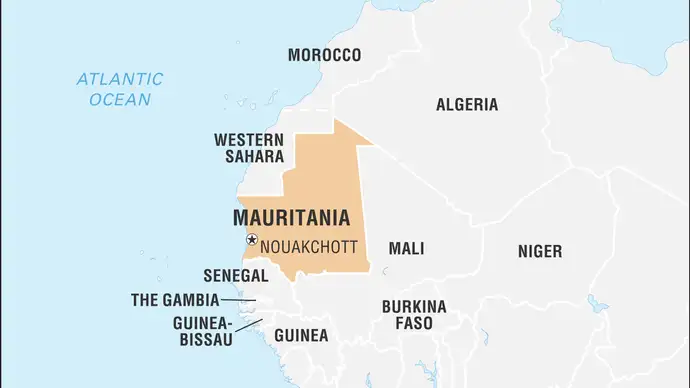

Mauritania, country on the Atlantic coast of Africa. Mauritania forms a geographic and cultural bridge between the North African Maghrib (a region that also includes Morocco, Algeria, and Tunisia) and the westernmost portion of Sub-Saharan Africa. Culturally it forms a transitional zone between the Arab-Amazigh (Berber) populations of North Africa and the African peoples in the region to the south of the Tropic of Cancer known as the Sudan (a name derived from the Arabic bilād al-sūdān, “land of the Blacks”). Much of Mauritania encompasses part of the Sahara desert, and, until the drought conditions that affected most of that zone of Africa in the 1970s, a large proportion of the population was nomadic. The country’s mineral wealth includes large reserves of iron ore, copper, and gypsum, all of which are now being exploited, as well as some oil resources.
flag of mauritania
Audio File:National anthem of Mauritania
Mauritania was administered as a French colony during the first half of the 20th century and became independent on November 28, 1960. By the terms of the constitution, Islam is the official state religion, but the republic guarantees freedom of conscience and religious liberty to all. Arabic is the official language; Fula, Soninke, and Wolof are national languages. The capital, Nouakchott, is located in the southwestern part of the country.
Mauritania is bounded to the northwest by Western Sahara (formerly the Spanish Sahara), to the northeast by Algeria, to the east and southeast by Mali, and to the southwest by Senegal. Its Atlantic Ocean coastline, to the west, extends for 435 miles (700 km) from the delta of the Sénégal River northward to Cape Nouâdhibou (Cape Blanco) Peninsula.
Arabic is the official language of Mauritania; Fula, Soninke, and Wolof are recognized as national languages. The Moors speak Ḥassāniyyah Arabic, a dialect that draws most of its grammar from Arabic and uses a vocabulary of both Arabic and Arabized Amazigh words. Most of the Ḥassāniyyah speakers are also familiar with colloquial Egyptian and Syrian Arabic due to the influence of television and radio transmissions from the Middle East. One result of Mauritanian Arabic being drawn into the mainstream of the Arabic-speaking world has been a revalorization of Ḥassāniyyah forms in personal names, especially evident in the use of “Ould” or “Wuld” (“Son of”) in male names. The Tukulor and the Fulani in the Sénégal River basin speak Fula (Fulfulde, Pular), a language of the Atlantic branch of the Niger-Congo family. The other ethnic groups have retained their respective languages, which are also part of the Niger-Congo family: Soninke (Mande branch) and Wolof (Atlantic branch). Since the late 1980s Arabic has been the primary language of instruction in schools throughout the country, slowly ending a long-standing advantage formerly held by the French-schooled populations of the Sénégal River valley.
In the Sahel region of Mauritania, a traditional subsistence economy composed of livestock raising, agriculture, crafts, and petty trading supports most of the population. In the Sahara region, however, a modern export economy is developing, based on the exploitation of iron ore and copper resources and of the rich fishing waters off the continental shelf. The Mauritanian economy receives much needed capital investment and technical assistance from abroad, and, in turn, it is sensitive to the vacillations in the world markets. More than three-fourths of the Mauritanian population engages in traditional activities, among which livestock raising is the most important. In numbers, goats and sheep are the most important livestock, followed by cattle and camels. Cattle are raised primarily in the southern region, whereas goats and sheep are dispersed as far north as the limits of the Sahara. Camels are raised mostly in the north and the centre, especially in the Adrar region. The growth of the Mauritanian economy slowed in the 1980s after a lengthy period of rapid expansion in the 1960s and ’70s. Since the severe drought in the early 1970s, the country has been dependent upon imported foodstuffs to feed its population. In the early 1980s iron ore production slowed because of a decline in world market prices; fishing became the leading source of foreign exchange earnings and remained so for much of the 1990s. In the mid-1990s the government began to demonstrate its commitment to the development of a tourist industry to further diversify the Mauritanian economy.
Mauritania’s budget, usually in deficit, was nominally balanced in the late 1980s. In the mid-1980s principal and interest on a relatively large foreign indebtedness was rescheduled, but indebtedness remains a significant problem. In the 1990s and early 2000s, additional portions of Mauritania’s debt were rescheduled or cancelled, and in 2005 the country was approved for the relief of its multilateral debt. Foreign aid, both bilateral (from France, Japan, Germany, and the Netherlands) and by multilateral agencies (such as the African Development Bank, the Islamic Development Bank, the International Monetary Fund [IMF], the International Fund for Agricultural Development, and the European Union [EU]), is primarily targeted to assist in project development but is also used for budgetary and food support. In the late 1990s donors linked aid to Mauritania with increased participation by the private sector. Although the government subsequently privatized a number of its holdings, donors were critical of practices that hindered the development of domestic markets. Increases in the gross domestic product (GDP) during the last two decades of the 20th century were generally offset by population increases. Mauritania’s GDP grew solidly in the first decades of the 21st century, mainly because of petroleum production that began in 2006. Early optimism that petroleum production might provide a major new source of income, however, has been tempered by disappointing results.